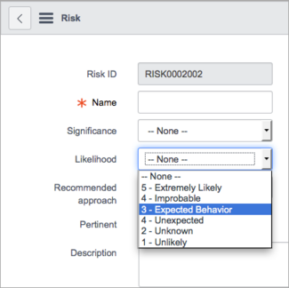

Defining GRC Risks
| |
Note: This article applies to Fuji. For more current information, see GRC Risks, Risk Criteria, and Risk Approach Rules - Legacy at http://docs.servicenow.com
The ServiceNow Wiki is no longer being updated. Please refer to http://docs.servicenow.com for the latest product documentation. |
Contents
1 Overview
A risk is a defined consequence that can occur if a policy is ignored. After risks are defined, they can be managed by:
- Defining Risk Criteria
- Defining Risk Approach Rules
- Creating Controls
- Creating and performing Control Tests
2 Defining a Risk
To define a Risk, navigate to GRC > Risks and click New. Populate the following fields:
| Field | Input Value |
|---|---|
| Risk ID | A unique number assigned to the Risk using number maintenance. |
| Risk Name | The name of the risk. |
| Significance | The impact of the the risk if it is realized. Defined by Risk Criteria. |
| Likelihood | The probability that the risk will be realized. Defined by risk criteria. |
| Recommended approach | A reference to the Risk Approach Rule that determines how to treat this risk. Can be calculated dynamically using the Calculate Risk Approach UI action on the form. |
| Pertinent | Indicator that shows if a risk document is relevant to your organization. By default, this check box is selected and has a value of True. Clear this checkbox to mark this risk as not pertinent to your organization and to prevent it from appearing in compliance reporting. This field is available starting with the Fuji release. |
| State | A choice field for the state of the risk. Choose from:
|
| Category | What category of risk applies to the record. |
| Compliance | [Read-only] Percentage of compliant control test instances associated with this risk. This field is available starting with the Fuji release. |
| Non-compliance | [Read-only] Percentage of non-compliant control test instances associated with this risk. This field is available starting with the Fuji release. |
| Applies To | A Document ID field to identify the scope. |
| Description | A verbose description of the risk. |
| Additional information | Information of any type that is pertinent to this risk. This field is available starting with the Fuji release. |
3 Defining Risk Criteria
In the base GRC system, the available risk criteria types are:
- Significance
- Likelihood
Values for these types are stored in the Risk Criteria [grc_risk_critera] table. Demo data in GRC provides a default range of criteria levels from least to most for both types. Starting with the Fuji release, you cannot create new risk criteria types.
To create risk criteria:
- Navigate to GRC > Administration > Risk Criteria.
- Click New.
- Complete these fields:
- Type: Select one of the types provided, either Likelihood or Significance.
- Display value: Create a name for the criteria that displays in the choice list. For example, enter 3 - Expected Behavior for the Likelihood type.
- Order: The order in which this choice appears in the choice list. This order should be logical for the level selected.
- Weighting: A numeric value for the risk, used to calculate risk approach rules. Low weighting factor indicates a lower overall risk, and high weighting factor indicates a higher overall risk.
- Click Submit.
- To select the new criteria in a risk record, navigate to GRC > Risks and click New.
- Open the choice list for the Likelihood field.
- The new criteria appears in the list by its display name.
- 
{kind=link}
{kind=link}
4 Defining Risk Criteria in Versions at Eureka and Earlier
| Click to expand |
|---|
|
Risk criteria are defined on the Risk Criteria [grc_risk_critera] table, which holds a record for each possible choice, grouped by Type. In the base GRC system, demo data is provided for these risk criteria types:
You can create new types or create new risk criteria for existing types. For risk criteria with custom types to be available on the Risk form, you must add a new field for that type to the form and configure it to show your risk criteria choices. To create risk criteria:
|
{kind=link}
{kind=link}
5 Defining Risk Approach Rules
To define a risk approach rule, navigate to Governance, Risk, & Compliance > Risk Approach Rules and click New. Populate the following fields:
| Field | Input Value |
| Recommended approach | A short description of the approach philosophy that will be used to mitigate the risk. |
| Active | If checked, the approach will be available for selection. |
| Condition | A condition builder that determines what risks to which this approach is applied when the Calculate Risk Approach button is clicked. Note: the first condition that is matched wins, so when creating new risk approach rules ensure that the conditions do not overlap with other risk approaches. |
| Description | A full description of the risk approach. |